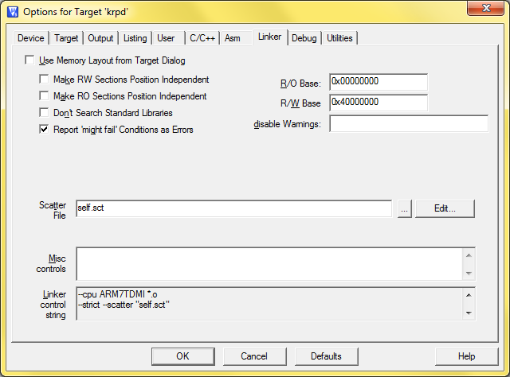
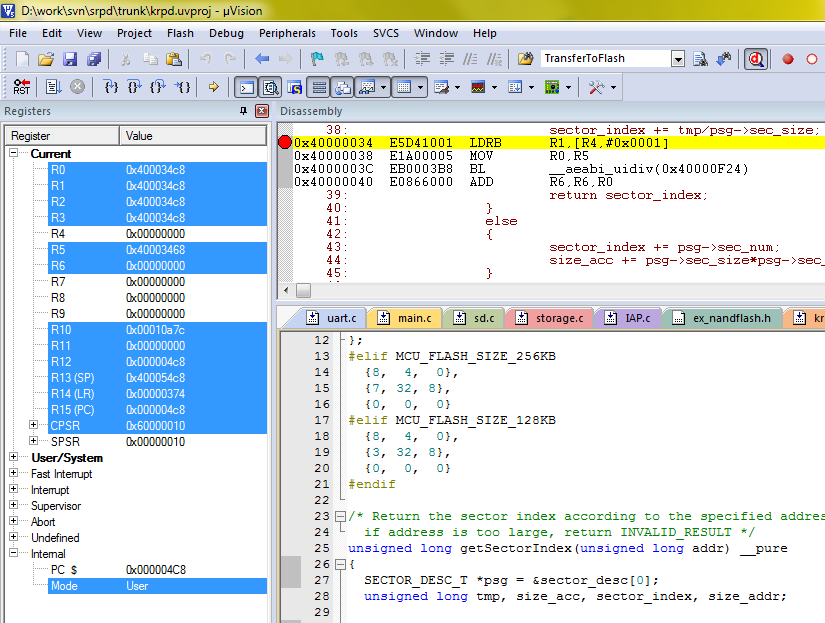

Исполняемый код, переписывающий сам себя на LPC2388Разрабатываю устройство на чипе LPC2388 производства NXP (Philips). Это ARM7TDMI-S, работает на частоте 60 МГц. Хороший рабочий чип, умеющий 10/100 Ethernet, USB, UART, CAN, SPI/SSP, I2C/I2S и контроллер внешней памяти (EMC), позволяющий подключать NOR, NAND flash или дополнительную RAM. На нём работает прибор, который ставится в локомотив и дальше катается с ним по всей стране. Нужно придумать удобный и быстрый способ обновления прошивки прибора. Стандартный способ обновления программы: снять прибор с локомотива, разобрать прибор, замкнуть на нём перемычку, подключить к компьютеру через COM-порт, прошить, и проделать всё в обратном порядке. Другой способ - использовать JTAG, что тоже требует снятие прибора с локомотива, его разборку и подключение к компьютеру, к тому же потребуется аппаратный отладчик. Нужно обойтись без всего этого. Прошивка должна уметь перезаписывать сама себя. Файл прошивки будет доставляться на SD-карте, которая вставляется в прибор, и дальше он должен сам себя перепрошить из этого файла. Так прошиваются многие бытовые устройства, всякие MP3-плееры, роутеры и т. п. Разберёмся, как это сделать на LPC2388. Поддержка SD-карт в чипе также имеется. Прибор уже умеет читать SD-карты (модуль от производителей микроконтроллера).
Поддерживается файловые системы FAT и FAT32 (благодаря модулю ChaN's FatFS). LPC2388 имеет интерфейс IAP (In Application Programming), он позволяет программе писать в свою флэш-память. В обычных условиях это невозможно, в памяти сидит программа и её константные данные, доступ только для чтения. Обычно и не требуется туда что-то писать во время работы программы, для изменяемых данных есть оперативная память, или можно поставить какую-либо внешнюю память и работать с ней. Кроме того, ресурс записи для внутренней FLASH ограничен - если постоянно в неё записывать, она может просто сдохнуть. Когда мы пишем на флэш, мы перезаписываем программу, которая выполняется в данный момент как раз с флэша. Как только мы стёрли сектора, где находится программа, процессору неоткуда взять следующую команду, которую он собирается выполнить. Весь код, который написан после этого места не выполнится, обновление не будет завершено, причём программа уже успешно стёрта и после перезапуска прибора мы получим кирпич. Это проблема, с которой нужно как-то разобраться. Причём, при решении этой проблемы возникают неочевидные подводные камни. А вот сами функции IAP сидят в ROM вместе с Boot Loader'ом, их убить нельзя (поэтому прибор всегда можно оживить при помощи компьютера, кабеля COM и утилиты Flash Magic). == Решение проблемы с затиранием кода на флэш ==Нужно, чтобы программа продолжала работать после стирания секторов флэш-памяти, ведь программа должна ещё записать туда новую прошивку. Вообще, в LPC2388 код может исполняться прямо в RAM. Нужно всего лишь разместить код, перезаписывающий флэш, в RAM. Тогда код сможет спокойно исполняться и делать всё что угодно с флэш-памятью. Но тут нужно строго следить за выполнением правила: ВЕСЬ код, который выполняется во время перезаписи флэш-памяти, должен располагаться в RAM. Можно легко не заметить прыжка обратно во флэш-память при вызове какой-нибудь сторонней функции, в этом-то месте программа и зависнет, а это приведёт к полной неудаче перепрошивки и состоянию "кирпич". == Предварительный алгоритм ==
После перезаписи и перезагрузки процессора (выключить и включить питание) новая программа, записанная во флэш должна получить управление, и перепрошивку можно считать завершённой. == Обращение к функциям IAP ==Функция IAP_Entry располагается в ROM по фиксированному адресу. Обращаться к ней будем с помощью такого объявления: #define IAP_LOCATION 0x7FFFFFF1 #define iap_entry(a, b) ((void (*)())(IAP_LOCATION))(a, b) unsigned long command[5] = {0,0,0,0,0}; unsigned long result[3]= {0,0,0}; __align(4) unsigned char IAP_Buf[IAP_BUF_SIZE]; Дальше можно реализовать свои функции, реализующие те или иные операции с секторами флэш. В приниципе, все эти функции уже давно реализованы. Доступны исходные тексты модулей IAP от производителей микроконтроллера. Вот, например, функция IAP_EraseSec реализующая стирание сектора: unsigned long IAP_EraseSec (unsigned long StartSecNum, unsigned long EndSecNum) { if (EndSecNum < StartSecNum) return IAP_STA_INVALD_PARAM; command[0] = IAP_CMD_EraseSec; command[1] = StartSecNum; command[2] = EndSecNum; command[3] = IAP_CLK / 1000; iap_entry(command, result); return result[0]; } В command[3] помещаем частоту, на которой работает микроконтроллер в данный момент, в КГц. Если у меня устройство работает на 60 МГц, то в command[3] будет значение 60000. == Размещение кода в RAM ==Вышеописанная функция IAP_EraseSec, и ей подобные, нужно разместить в RAM. Сделать это проще всего на этапе сборки программы. Я пользуюсь компилятором MDK ARM 5.0 и средой разработки Keil µVision 5. Эта среда поддерживает так называемые scatter files, то есть файлы настройки размещения модулей в памяти. Этот файл у меня выглядит так:
; *************************************************************
; *** Scatter-Loading Description File ***
; *************************************************************
LR_IROM1 0x00000000 0x00080000 { ; load region size_region
ER_IROM1 0x00000000 0x00080000 { ; load address = execution address
*.o (RESET, +First)
*(InRoot$$Sections)
.ANY (+RO)
}
RW_IRAM1 0x40000000 0x00010000 { ; RW data
iap.o
lpc2000_sector.o
aeabi_sdiv.o
.ANY (+RW +ZI)
}
}
Чтобы использовать свой .sct файл, а не тот, который генерирует среда Keil, нужно в опциях проекта на вкладке Linker снять галку с опции "Use Memory Layout from Target Dialog", затем ниже, в поле Scatter File указать файл .sct, который нужен. Этот файл пусть лежит в папке с проектом. Редактировать его можно внутри среды, для этого рядом с полем находится кнопка Edit.  Регион RW_IRAM означает регион в памяти RAM, имеющий доступ как на чтение, так и на запись. И размещены в нём модули iap.o, lpc2000_sector.o и aeabi_sdiv.о. Первый модуль - реализация IAP, второй модуль содержит функцию вычисления номера сектора во флэш по адресу (в памяти LPC2388 не все секторы имеют одинаковую длину, поэтому номер сектора нужно специально вычислять). Третий же модуль попал сюда тоже не случайно, но о нём отдельный разговор. == Попытка один ==Разместил модули в RAM - ещё раз внимательно просмотрел все функции, чтобы они не использовали
никакие переменные из flash и не вызывали никакие функции оттуда. Вроде всё проверил,
запустил - и получил зависание после успешной записи нескольких первых секторов. /* Return the sector index according to the specified address, if address is too large, return INVALID_RESULT */ unsigned long getSectorIndex(unsigned long addr) { SECTOR_DESC_T *psg = §or_desc[0]; unsigned long tmp, size_acc, sector_index, size_addr; size_acc = 0; size_addr = addr>>10; sector_index = INITIAL_SECTOR_INDEX; while (psg->sec_num) { tmp = size_addr - size_acc; //KB if (psg->sec_size*psg->sec_num > tmp) { sector_index += tmp/psg->sec_size; return sector_index; } else { sector_index += psg->sec_num; size_acc += psg->sec_size*psg->sec_num; } psg++; } return INVALID_RESULT; } Код умирал на строчке sector_index += tmp/psg->sec_size;. Безобидная строчка с арифметическими операциями. Я посмотрел на неё в отладчике и увидел, что на этой строчке происходит вызов функции __aeabi_uldivmod. Судя по названию, эта функция выполняет операцию деления. Оказывается, в LPC2388 нет аппаратной реализации деления. Поэтому деление реализовано в библиотеке, а вызов соответствующей функции происходит неявно. Анализ map-файла показал, что функция __aeabi_uldivmod находится в модуле aeabi_sdiv.o. Его я тоже добавил в scatter file, и это решило проблему.  Почему не добавить в RAM также и модуль доступа к SD-карте и модуль файловой системы FAT, чтобы читать с карты и сразу записывать в нужные сектора? Потому, что RAM маленькая, всего 64 кб, все модули могут туда не поместиться. Нечего захламлять RAM, в то время как проще выделить неиспользуемый регион во внутренней flash-памяти (где-нибудь ближе к её концу) и использовать его для промежуточного хранения прошивки. Мне также понадобилось использовать функцию memcpy, но было неохота переносить весь её модуль в RAM. Поэтому я вставил отдельную реализацию одной этой функции в модуль iap.c, назвал её xmemcpy и использовал под этим именем. Затем, когда нужно будет перезаписывать сектора, где располагается программа, не потребуется вызывать функции SD или FAT, достаточно будет читать небольшими порциями данные из одного сектора flash в RAM и писать их в другой сектор. == Что делать с прерываниями? ==Вектора прерываний хранятся в первом секторе, там же, где начинается программа. Они занимают пространство с 0x00000000 по 0x0000001C. Когда мы перезаписываем первый сектор прерывания должны быть отключены, чтобы, после перезаписи, программный счётчик не прыгнул куда-нибудь в открытый космос. Но при записи в другие сектора, кроме первого, можно пользоваться прерываниями. Ими даже необходимо пользоваться, если мы одновременно читаем, например, с карты SD, и пишем во флэш, так как логика работы модуля SD предполагает, что прерывания доступны. А вот когда мы уже приступили к перезаписи реальных секторов, где находится программа (сюда входит и сектор 0), прерывания нужно отключить. На этом этапе прерывания нам уже не нужны, внешние модули не вызываются, просто читается информация из одного места flash-памяти и пишется в другое. Функции IAP уже содержат внутри включение и отключение прерываний в нужных местах, но в этом таится очередная проблема. См. например функцию IAP_Program: /* program content in IAP_Buf to internal flash with address of app_addr, and sector index of sector_index. if ok, return 0, otherwise return the error code. */ int IAP_Program(unsigned int sector_index, unsigned int app_addr) { unsigned int IAP_return[2]; // program 1kb [app_addr] // prepre sector [sector_index] to write if(IAP_PrepareSec(sector_index, sector_index) != IAP_STA_CMD_SUCCESS) { return 10; } disable_interrupts(); if ((IAP_CopyRAMToFlash(app_addr, (unsigned int)IAP_Buf, IAP_BUF_SIZE)) != IAP_STA_CMD_SUCCESS) { enable_interrupts(); return 12; } enable_interrupts(); if (IAP_Compare(app_addr, (unsigned long)IAP_Buf, IAP_BUF_SIZE, (unsigned long *)IAP_return) != IAP_STA_CMD_SUCCESS) { return 13; } return 0; } В LPC2388 занятный механизм отключения прерываний. Обычный для микроконтроллеров способ "запиши бит в регистр и тем самым отключи прерывания" здесь не работает. Нужный регистр имеется, но просто записать в него бит нельзя (это не приводит ни к какому эффекту). Чтобы что-то в него записать, нужно обязательно использовать специальный модуль, написанный на ассемблере (swi.s) и механизм так называемых программных прерываний (software interrupts, swi). Использованные выше макросы выглядят так: /* XXX Требует ассемблерный файл swi.s с обработчиком SWI. */ void __swi(0xFE) disable_interrupts(void); /* SWI.s */ void __swi(0xFF) enable_interrupts(void); /* SWI.s */ А в файле SWI.S есть SWI_Handler, который обрабатывает подобные вызовы. В зависимости от параметра (0xFE либо 0xFF) происходит отключение или включение прерываний. Сам файл небольшой, поэтому привожу его тут полностью: ;/*****************************************************************************/ ;/* SWI.S: SWI Handler */ ;/*****************************************************************************/ ;/* This file is part of the uVision/ARM development tools. */ ;/* Copyright (c) 2005-2006 Keil Software. All rights reserved. */ ;/* This software may only be used under the terms of a valid, current, */ ;/* end user licence from KEIL for a compatible version of KEIL software */ ;/* development tools. Nothing else gives you the right to use this software. */ ;/*****************************************************************************/ T_Bit EQU 0x20 PRESERVE8 ; 8-Byte aligned Stack AREA SWI_Area, CODE, READONLY ARM EXPORT SWI_Handler SWI_Handler STMFD SP!, {R12, LR} ; Store R12, LR MRS R12, SPSR ; Get SPSR STMFD SP!, {R8, R12} ; Store R8, SPSR TST R12, #T_Bit ; Check Thumb Bit LDRNEH R12, [LR,#-2] ; Thumb: Load Halfword BICNE R12, R12, #0xFF00 ; Extract SWI Number LDREQ R12, [LR,#-4] ; ARM: Load Word BICEQ R12, R12, #0xFF000000 ; Extract SWI Number ; add code to enable/disable the global IRQ flag CMP R12,#0xFE ; disable IRQ implemented as __SWI 0xFE BEQ disable_IRQ CMP R12,#0xFF ; enable IRQ implemented as __SWI 0xFF BEQ enable_IRQ LDMFD SP!, {R8, R12} ; Load R8, SPSR MSR SPSR_cxsf, R12 ; Set SPSR LDMFD SP!, {R12, PC}^ ; Restore R12 and Return SWI_End disable_IRQ LDMFD SP!, {R8, R12} ; Load R8, SPSR ORR R12, R12, #0x80 ; Set IRQ flag to disable it MSR SPSR_cxsf, R12 ; Set SPSR LDMFD SP!, {R12, PC}^ ; Restore R12 and Return enable_IRQ LDMFD SP!, {R8, R12} ; Load R8, SPSR BIC R12, R12, #0x80 ; Set IRQ flag to disable it MSR SPSR_cxsf, R12 ; Set SPSR LDMFD SP!, {R12, PC}^ ; Restore R12 and Return END И всё это добро опять же - код на флэш. А мы уже знаем, что обращаться к нему нельзя, когда мы в RAM. Выход: заранее, перед переходом в RAM, отключаем все прерывания. А дальше просто не обращаемся к swi-обработчикам, так мы знаем, что прерывания уже отключены и включать их не надо. Можно просто изолировать вызовы через какую-нибудь глобальную переменную. Пишем так: if (g_bAllowInterrupts) disable_interrupts();, а глобальную переменную g_bAllowInterrupts ставим либо в true (обычный режим), либо в false (когда мы сами уже отключили прерывания). Таким образом, нежелательного перехода в модуль SWI.s удаётся избежать. == Попытка два ==Теперь код нигде не умирал и выполнялся до конца. Заканчивался код в бесконечном цикле,
в этот момент нужно выключить устройство, включить его снова, и убедиться, что устройство
работает под управлением новой прошивки. Я сделал это, но после перезагрузки не увидел на
терминале никакого отладочного вывода. Прошивка не загрузилась. В первом секторе в первых 32 байтах (адреса с 0x00000000 по 0x0000001C) находятся вектора прерываний, каждый размером 4 байт. В коде это выглядит так: Reset_Addr DCD Reset_Handler
Undef_Addr DCD Undef_Handler
SWI_Addr DCD SWI_Handler
PAbt_Addr DCD PAbt_Handler
DAbt_Addr DCD DAbt_Handler
DCD 0 ; Reserved Address
IRQ_Addr DCD IRQ_Handler
FIQ_Addr DCD FIQ_Handler
Видно, что по смещению 0x00000014 находится некая зарезервированная величина. Так вот оказалось, что это - Valid User Program key, контрольная сумма векторов прерываний, которую проверяет бутлоадер и решает, можно ли загрузить программу. В моей программе оказалось, что в этом месте - случайное значение, не содержащее контрольную сумму. Очевидно, прежде, чем заливать образ, его нужно подготовить. Контрольная сумма требуется такая, чтобы в результате сложения всех восьми слов получился в результате 0. Мной была написана следующая функция, которая одновременно и вычисляет контрольную сумму векторов прерываний, и проверяет, содержится ли эта контрольная сумма в указанной области памяти. Если функция вернула false, вычисленную checksum нужно записать в ptr[5] и тогда всё станет в порядке. Внутри самой функции это не делается, так как не стоит задачи поправлять контрольную сумму внутри прошивки. Контрольную сумму нужно лишь проверить. Это со стороны ПК нужно написать такую программу, которая будет брать файл .bin, вставлять ему по смещению 0x00000014 вычисленную контрольную сумму, и только тогда файл пригоден для обновления устройства. // addr = адрес в RAM // checksum - сюда пишется вычисленная контрольная сумма // возвращаемое значение - true, если контрольная сумма в addr совпадает с вычисленной bool ChecksumVectors(void * addr, OUT uint32_t * checksum) { uint32_t * ptr = (uint32_t *)addr; uint32_t uSum, uCheckSum; uSum = ptr[0]; uSum += ptr[1]; uSum += ptr[2]; uSum += ptr[3]; uSum += ptr[4]; uSum += ptr[6]; uSum += ptr[7]; uCheckSum = ~uSum; uCheckSum += 1; if (NULL != checksum) *checksum = uCheckSum; return (uCheckSum == ptr[5]); } С этой функцией стало возможным проверять, правильный ли образ нам подсунули. Я залил для проверки правильный образ, программа прошила его в память и устройство смогло успешно стартовать после перезагрузки. Успех! Дальше я ввёл дополнительную защиту с проверкой контрольной суммы CRC32 всего образа (а не только заголовка), но это уже тривиально. Итоговый алгоритм получился такой:
Тут возможны варианты. Например, в пункте 3 не отказываться от прошивки, а править контрольную сумму прямо в файле, а после копировать его к себе уже с правильной контрольной суммой. Для пункта 2 это исключено, а вот для третьего вполне можно. В пункте 8 можно самому вызвать перезагрузку каким-нибудь образом, например, через watchdog. Правда, я это реализовывать не стал, ради того, чтобы чётко показывать момент завершения перепрограммирования. Оно происходит так быстро, что человек может не понять, обновилась у него программа на устройстве, или просто ничего не произошло. Собственно, всё. Своей цели я добился - прибор может прошивать сам себя. Заодно научился правильно размещать код в памяти, узнал об отсутствии на платформе аппаратного деления, научился пользоваться внутренней flash-памятью LPC. == Файлы ==
|